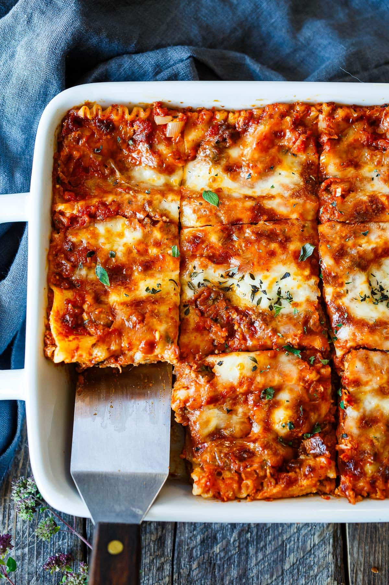

Lasagna Recipe

Ingredients
Meat Sauce
- Onion
- Garlic
- Carrot
- Celery
- Beef
- Canned Tomato
- Tomato Paste
- Red Wine
- Beef Stock
- Bay Leaves
- Thyme
- Oregano
- Worscestershire Sauce
White Sauce
Assembly
Steps
- Cook the meat sauce similar to making Bolognese.
- Smear a bit of meat sauce on the base first - stops the lasagna sheets from sliding around.
- Layer 1 Top with meat sauce, bit of white sauce.
- Layer 2 Lay out more lasagna sheets then top with more meat sauce and more white sauce.
- Layer 3 Repeat again, lasagna sheets, meat sauce then white sauce.
- Topping Cover with lasagna sheets, pour over remaining white sauce then sprinkle with cheese.
Home